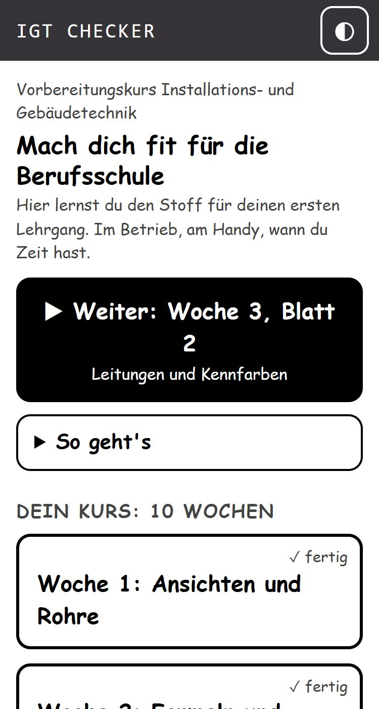
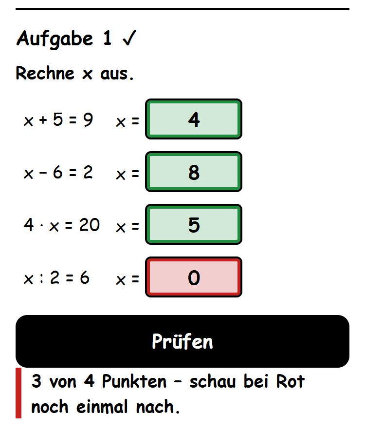
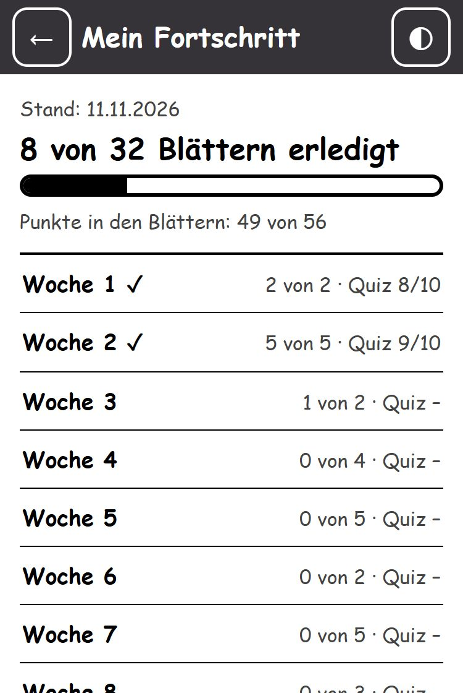

Vorbereitungskurs Installations- und Gebäudetechnik
Fit für den ersten Lehrgang
Eine Lern-App für Jugendliche, die eine Lehre in der Installations- und Gebäudetechnik beginnen. Sie üben Fachkunde und Mathematik am Handy. Dazu gibt es Lernvideos und Arbeitsblätter zum Herunterladen und Ausdrucken. Im Betrieb, zu Hause oder wann immer Zeit ist.
▶ App öffnenWoche 1 und 2 immer gratisWas ist IGT Checker?
IGT Checker bereitet auf den Stoff der Berufsschule vor. Der Kurs ist für 10 Wochen geplant. Wer schneller ist, kann ihn auch in kürzerer Zeit durcharbeiten. Fachkunde und Mathematik wechseln sich ab:
- Fachkunde: Zeichnen, Rohre, Sanitärgegenstände, Wasserversorgung, Heizung, Werkstoffe
- Mathematik: Formeln, Längen, Flächen, Volumen, Rohrinhalt, Masse
Jede Woche hat Blätter zum Lesen und Ausfüllen, Lernkarten und ein Quiz. Zu vielen Blättern gibt es ein Lernvideo.
So funktioniert's



Für Lehrbetriebe und Eltern
Geben Sie Ihrem Lehrling diesen QR-Code oder die Adresse:
rainerlernstoff.github.io/
- Keine Anmeldung, nichts zu installieren.
- Am Handy „Zum Startbildschirm hinzufügen“: Dann läuft die App ohne Internet.
- Planen Sie die Lernzeiten mit dem Jugendlichen und lassen Sie sich „Mein Fortschritt“ zeigen.
Probe-Version und Vollversion
Woche 1 und 2 sind immer kostenlos. So können Sie und der Jugendliche den Kurs in Ruhe kennenlernen.
Den vollständigen Kurs mit allen 10 Wochen gibt es in der Vollversion. Diese biete ich Landesinnungen, Organisationen und Ausbildungsbetrieben an (siehe unten).
Sicher und ohne Werbung
- Ohne Werbung.
- Keine Anmeldung, keine Namen, keine E-Mail.
- Der Fortschritt bleibt nur am Handy gespeichert. Nichts wird verschickt.
- Funktioniert nach dem ersten Öffnen auch offline. Nur die Videos brauchen Internet (YouTube).
Über mich
Ich heiße Rainer Mayrhofer. Seit 2009 bringe ich angehenden Installateuren Fachkunde und Mathematik bei. Die App IGT Checker hilft den Jugendlichen, eventuelle Wissenslücken zu schließen und erfolgreich in den Lehrberuf zu starten.
Neuartige Lernkonzepte interessieren mich. Die App habe ich privat und aus Eigeninteresse entwickelt. Sie ist kein offizielles Angebot einer Schule.
Für Landesinnungen, Organisationen und Ausbildungsbetriebe
Mit einer Partner-Lizenz bekommen Ihre Lehrlinge und Betriebe den vollständigen Kurs:
- eigene Fassung der App mit Ihrem Logo, eigenem Link und QR-Code
- alle 10 Wochen, für Ihre Lehrlinge kostenlos
- jährliche Aktualisierung der Inhalte und Betreuung
- auf Wunsch eigene Inhalte oder ein eigener Kursplan
- persönliche Vorstellung
Schreiben Sie mir, ich schicke Ihnen gerne ein Angebot.
✉ Kontakt aufnehmenÖffnet Ihr E-Mail-Programm. ▶ App öffnen